منصةٌ رقمية متكاملة لمراكز التحفيظ في ليبيا — متابعة الحفظ والحضور والاختبارات بالأثمان والتقارير، لكل طالبٍ ومحفّظٍ وولي أمر.
﴿ وَرَتِّلِ القُرآنَ تَرتيلًا ﴾
سورة المُزَّمِّل — الآية ٤
أربعة أدوار متكاملة على منصة واحدة — كلٌّ يرى ما يخصّه ويملك أدواته.
إشرافٌ كامل على المنظومة: المراكز والمحفّظون والطلاب ومدراء المراكز، والتقارير الشاملة وتقارير الأوقاف.
يدير مركزه حصراً: محفّظوه وطلابه، طلبات النقل الداخلية، واستيراد حضور البصمة لمركزه.
حلقاته يوماً بيوم: تسجيل الحضور، تتبّع الحفظ سورةً سورة، والاختبارات الأسبوعية بالأثمان.
يتابع أبناءه أولاً بأول: تقدّم الحفظ، نسبة الحضور، ونتائج الاختبارات — بحسابٍ واحد لكل الأبناء.
نظامٌ يربط المدير والمعلم وولي الأمر في مكان واحد، يرقمن إدارة الكتاتيب: تسجيل الحضور، تتبّع الحفظ والمراجعة، الاختبارات الأسبوعية بالأثمان، والتقارير المفصّلة.
رقمنة الكتاتيب الليبية مع الحفاظ على أصالتها ونهجها في الإتقان.
تمكين المعلمين بأدوات متابعة دقيقة، وإشراك أولياء الأمور في رحلة أبنائهم.
الإتقان، الأمانة، والمتابعة المستمرة لرفع مستوى حفظ كتاب الله.
مشاهد من حلقات الحفظ والتسميع والمسابقات القرآنية في الكتاتيب والمساجد الليبية — الروح الأصيلة التي بُنيت منصة مُتقِن لخدمتها.
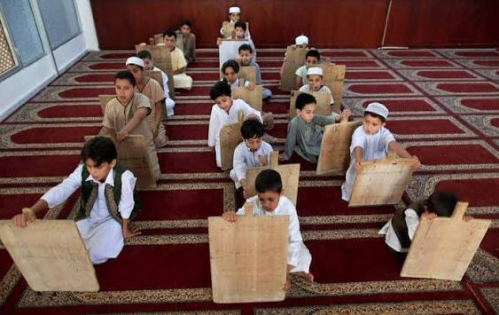
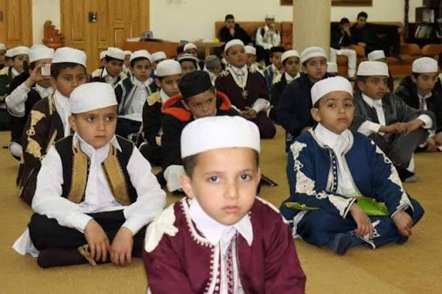
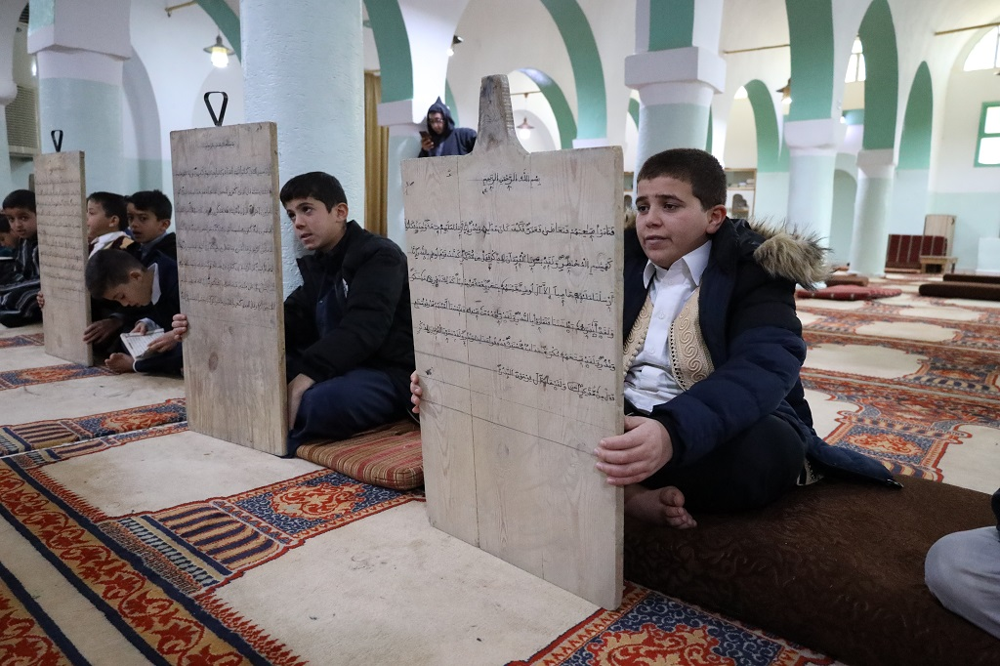
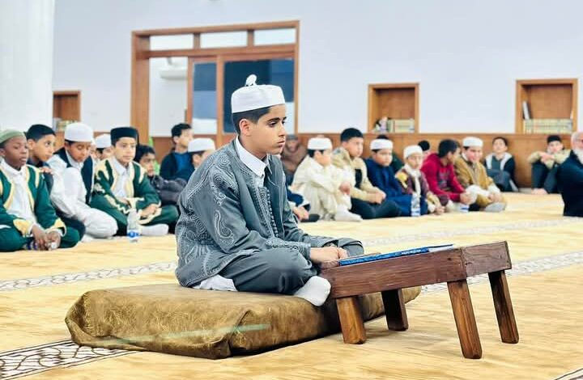
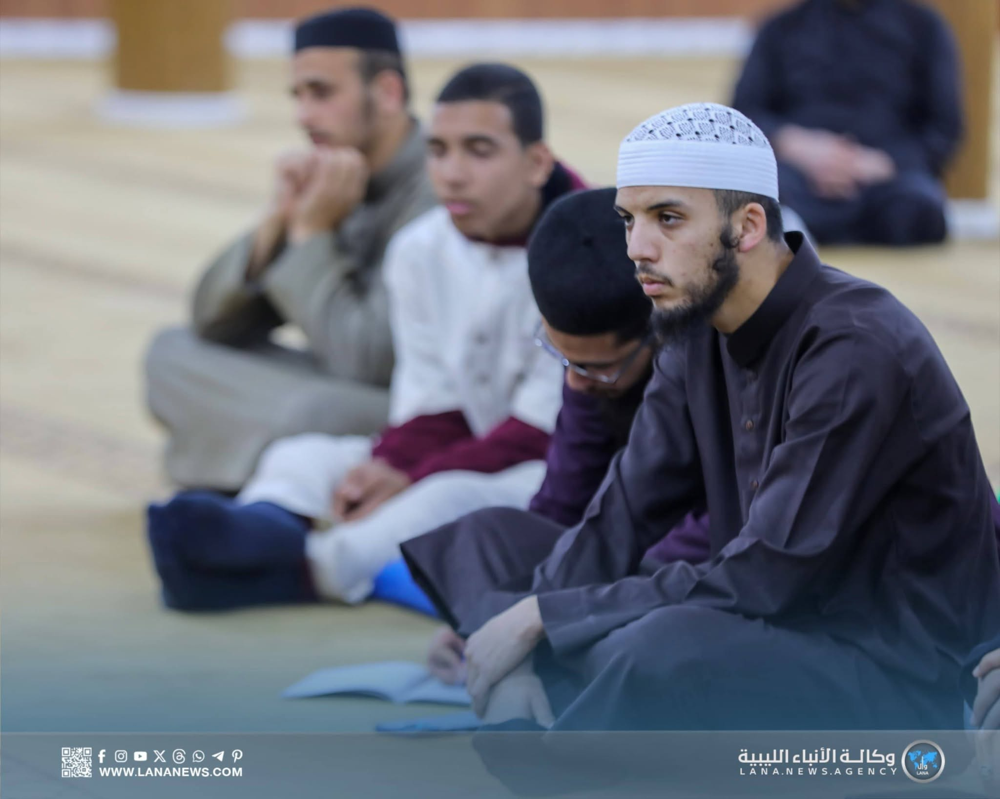
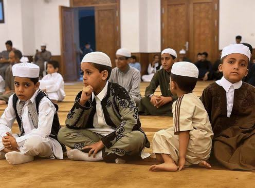
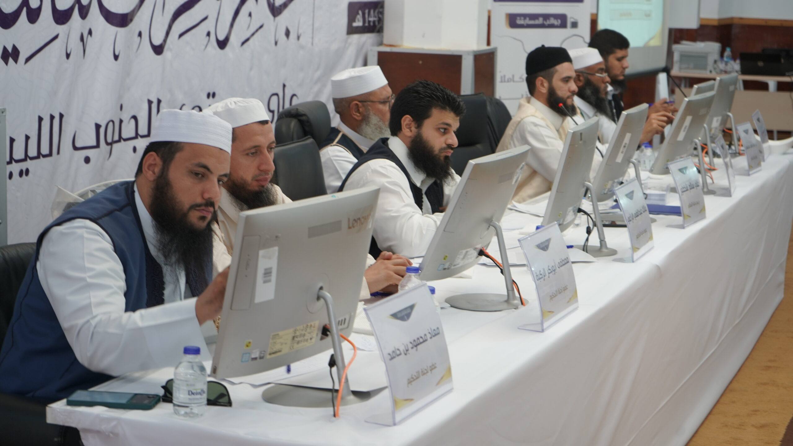
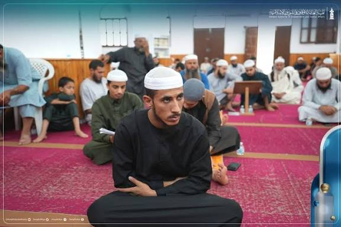
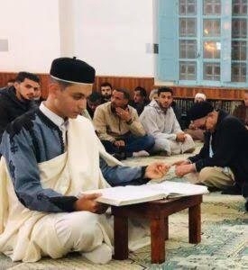
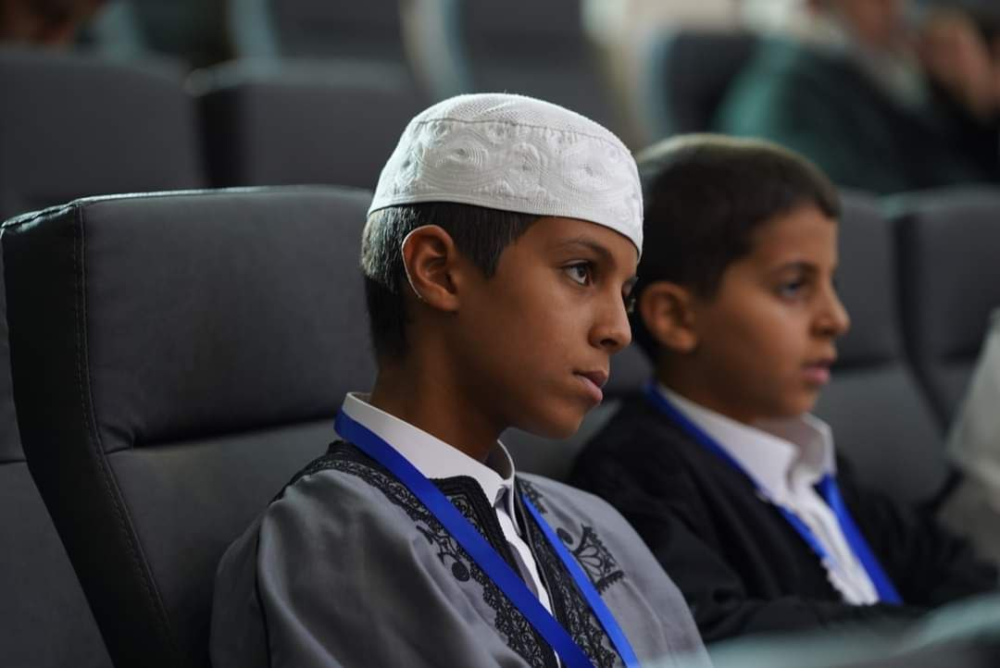
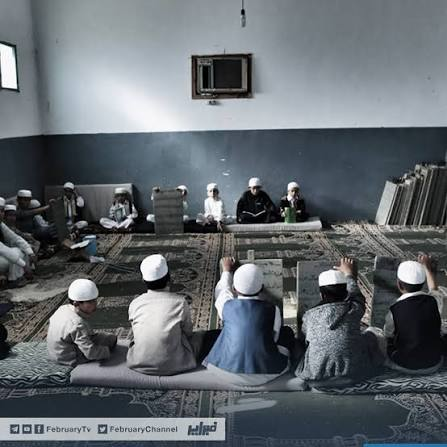
حفظٌ متدرّج بخطة ومراجعة منتظمة.
إتقان الأحكام والمدود عمليًّا.
نطقٌ سليم لمخارج الحروف وصفاتها.
الوصول للإجازة بالسند المتصل.